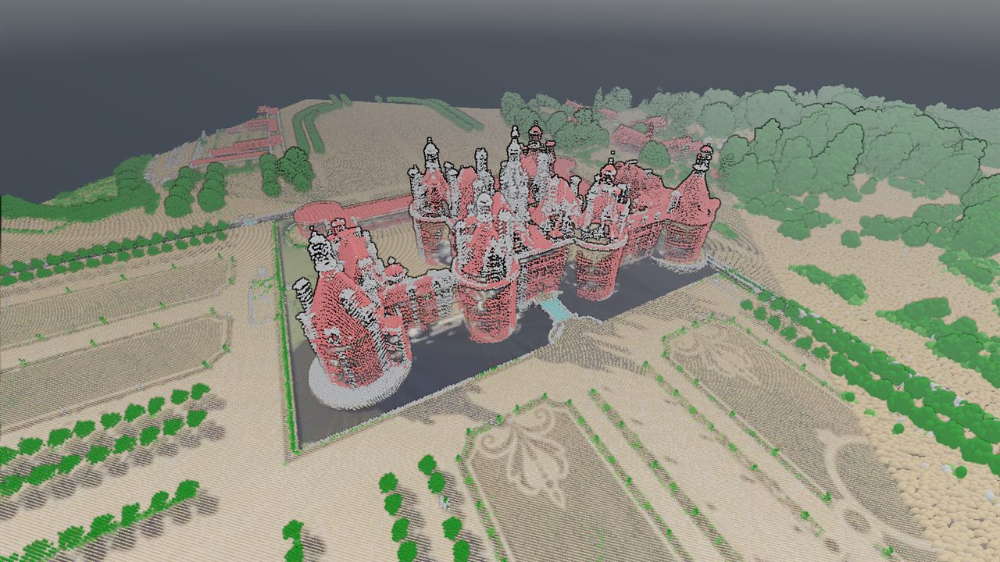
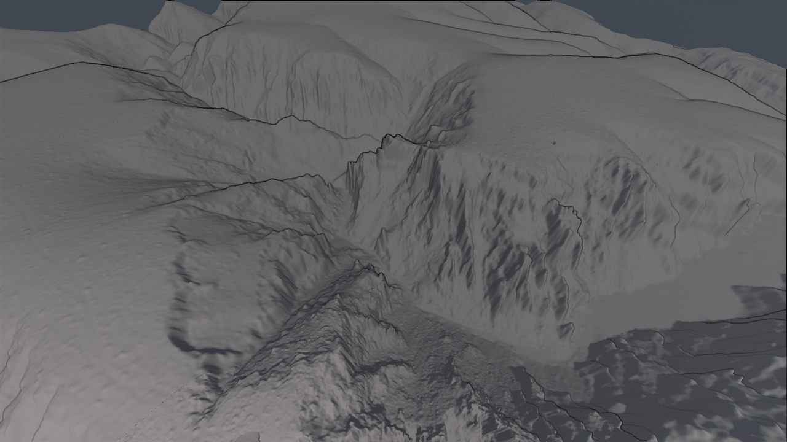
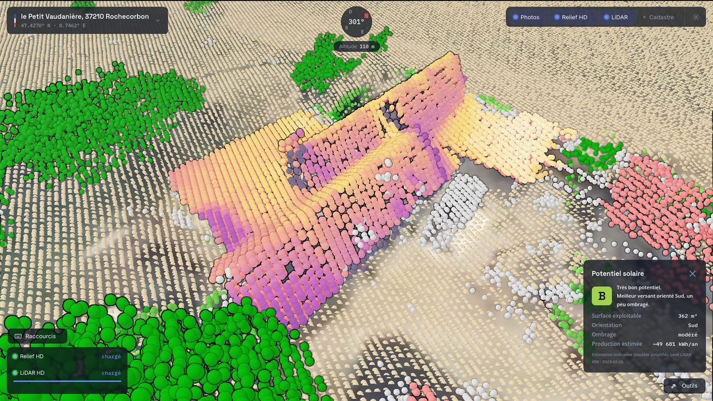
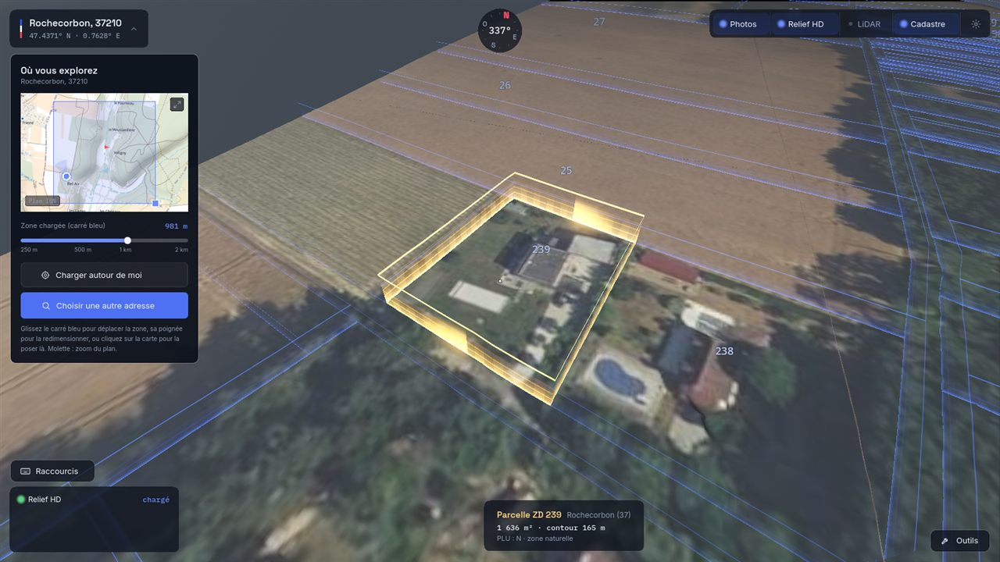
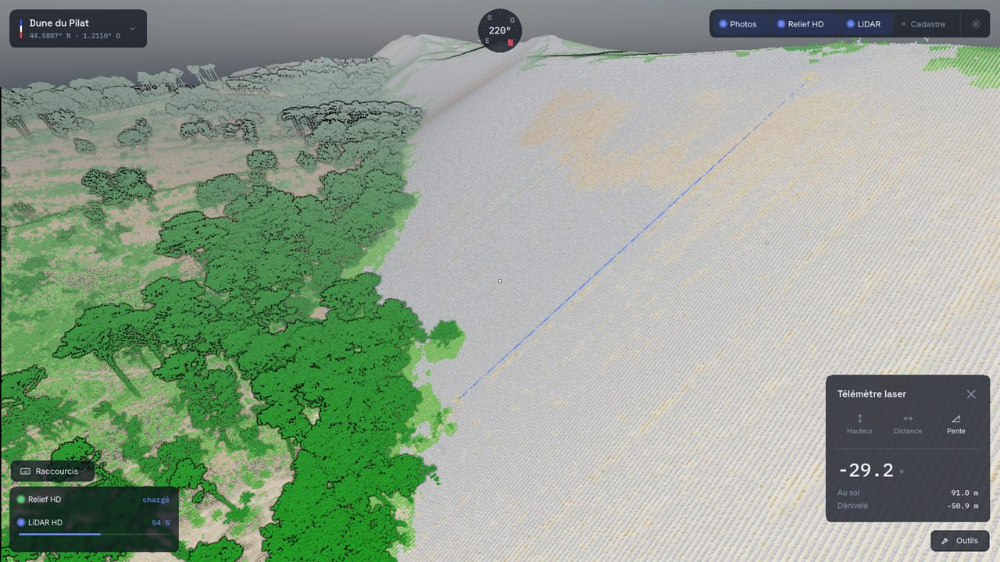
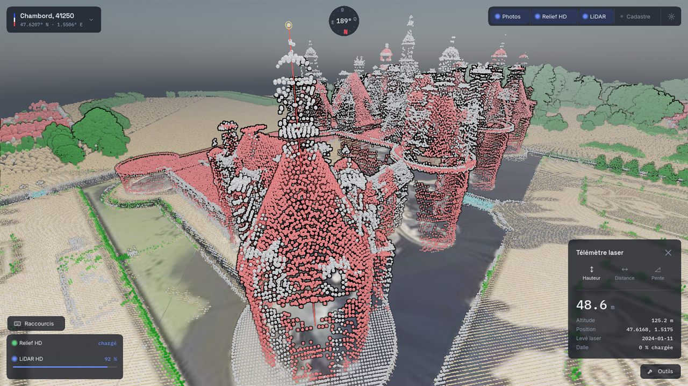

Le relief exact, les photos aériennes, chaque arbre et chaque toit scannés au laser : la France des experts, à la portée de tous.
Pas de données à télécharger, pas de logiciel compliqué à apprendre : France Vue assemble les meilleures données officielles de l'IGN en un monde 3D continu, pendant que vous l'explorez.
Chaque colline, chaque vallon, chaque falaise à sa vraie hauteur. Le terrain se reconstruit autour de vous au fil de votre balade.
Relief fidèleDes photos aériennes de haute qualité posées sur le terrain. Affichez la vue récente, ou remontez le temps pour voir le même lieu il y a des décennies.
Récent ou historiqueLe territoire scanné au laser à 10 cm près. Là où d'autres services se trompent de plusieurs mètres sur un toit ou un arbre, ici les volumes sont justes.
Précision 10 cmSix captures prises dans France Vue, sans retouche. Tout ce que vous voyez ici, vous le ferez dès la première minute.

Scan LiDARChambord point par point
Relief HDLes Calanques à nu
Potentiel solaireÉtudiez votre potentiel solaire
CadastreTrouvez votre parcelle
Télémètre laserMesurez l'inclinaison d'une pente
Télémètre laserMesurez des hauteurs et distancesFrance Vue est construit sur la Géoplateforme de l'IGN, l'Institut national de l'information géographique et forestière, celui qui lève, photographie et scanne le territoire depuis plus de 80 ans.
Relief, orthophotos et LiDAR HD sont les données de référence de l'État, produites et qualifiées par l'IGN. Pas une mosaïque de sources approximatives : la France telle qu'elle est mesurée.
Le programme LiDAR HD scanne le territoire à ≈ 10 points par m² : chaque haie, chaque toit, chaque talus. Une bonne partie de la France est déjà couverte, et le reste arrive bientôt.
France Vue ne demande aucun compte et ne collecte aucune donnée personnelle. Vos balades, vos adresses, vos lieux : tout reste sur votre machine.
Je m'appelle Xavier. Ingénieur en géospatial et en rendu temps réel, je travaille depuis huit ans sur les données du territoire. J'ai créé France Vue pour rendre les données souveraines de l'IGN accessibles à tous, et aussi agréables à parcourir qu'un jeu vidéo.
L'application est gratuite, sans publicité, et le restera. Si elle vous sert, vous pouvez soutenir son développement sur Tipeee : chaque contribution finance directement la feuille de route, décidée avec la communauté.
Xavier
France Vue veut rendre les données cartographiques souveraines utiles à tous. Essayez-la, et venez façonner la suite : vos bugs, vos idées, vos besoins.
Explorer un lieu, mesurer un terrain, préparer un projet : racontez ce que vous faites de France Vue.
Un plantage, un affichage qui cloche ? Décrivez-le ici, c'est le chemin le plus court vers un correctif. Chaque version doit sa stabilité à ces retours.
Bâtiments 3D, mode hors-ligne, version Mac : proposez, votez, et regardez les plus demandées arriver dans l'application.
Que France Vue est déjà pleinement utilisable, mais encore jeune : des choses s'améliorent à chaque version et quelques défauts subsistent. C'est le bon moment pour la prendre en main et peser sur la suite : vos retours dans la communauté orientent directement ce qui est corrigé et ajouté.
L'exploration de la France entière est gratuite, sans publicité et sans compte, et le restera. Des modules optionnels pourront arriver plus tard (hors-ligne, exports). Aujourd'hui, le projet vit grâce aux soutiens volontaires sur Tipeee.
De l'IGN, via sa Géoplateforme : le relief RGE Alti, les orthophotographies officielles et le nuage de points LiDAR HD. Ce sont les données géographiques de référence de la France, ouvertes à tous.
Le programme LiDAR HD de l'IGN couvre le territoire progressivement. La majeure partie de la France est déjà disponible et les zones restantes arrivent en continu. Là où le LiDAR n'est pas encore publié, le relief et les photos aériennes restent parcourables.
Un PC sous Windows 10 ou 11 avec une carte graphique de moins de dix ans et une connexion internet. La qualité d'affichage s'ajuste automatiquement, et finement si vous aimez les réglages.
Non. Pas de compte, pas de télémétrie, pas de traceurs. Les adresses que vous recherchez ne servent qu'à positionner la caméra et restent sur votre machine.
Sur le Discord de France Vue : un salon pour les bugs, un autre pour les idées que vous pouvez proposer et voter. C'est là que se décide la suite, et le créateur y répond directement.
La version Linux est disponible : téléchargez l'archive .tar.gz, extrayez-la, puis lancez FranceVue.x86_64. Les mises à jour automatiques n'y sont pas encore, revenez ici pour les nouvelles versions. Mac est à l'étude : venez le dire à la communauté si vous en avez besoin, ça pèse dans les priorités !
Téléchargez, tapez un lieu, marchez.
Version 0.2 bêta · Gratuit · Données officielles IGN
Au lancement, Windows peut afficher un avertissement bleu : cliquez sur
« Informations complémentaires », puis « Exécuter quand même ».
Sur Linux : extrayez l'archive .tar.gz, puis lancez FranceVue.x86_64.
Trois étapes et vous explorez :
À faire une seule fois : ensuite l'application se met à jour toute seule.